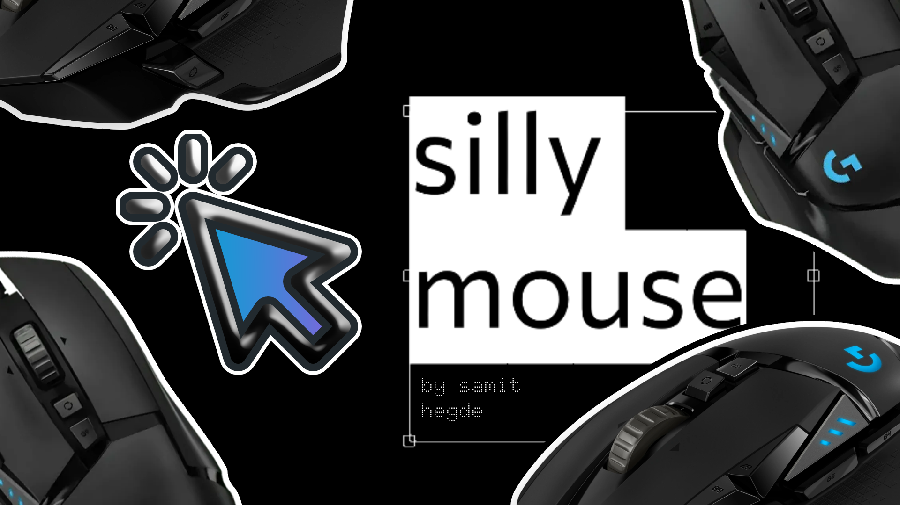

// fix cps test and scrolling measurements
//maybe add a timer selection for each
// more animations, maybe tailwind
// transition into vite + ts ??

<!DOCTYPE html>
<html>
<head>
  <title>silly mouse site</title>
  <link rel="stylesheet" href="style.css">
  <link rel="icon" type="image/x-icon" href="sillymouse.png">
  <meta name="google-site-verification" content="okSt1r6HDRi0MstlOTm2LvISUe1NUy6nEC79KXXXmn8" />
  <script src="https://cdn.tailwindcss.com"></script>
</head>
<body>
  <div id="splash" class="fixed inset-0 flex items-center justify-center z-50 backdrop-blur-lg">
    
  </div>
  <canvas id="fx"></canvas>
  <div id="container">
    <div id="cps">
      <div class="label">click anywhere</div>
      <div id="cpsValue">0 CPS</div>
      <div id="totalClicks">0 clicks</div>
    </div>
    <div id="scroll">
      <div class="label">scroll test</div>
      <div id="scrollValue">0 px/s</div>
      <div id="scrollBox">
        <div id="scrollContent"></div>
      </div>
    </div>
  </div>
  <div id="menu" class="absolute top-4 right-4 z-20">
    <div class="relative">
      <button id="creatorBtn" class="bg-blue-500 hover:bg-blue-700 text-white font-bold py-2 px-4 rounded transition duration-300 ease-in-out transform hover:scale-105">
        ☰
      </button>
      <div id="dropdown" class="absolute right-0 mt-2 w-48 bg-white rounded-md shadow-lg opacity-0 invisible transition-all duration-300 transform translate-y-2 z-10">
        <a href="https://samithegde.vercel.app" target="_blank" class="block px-4 py-2 text-gray-800 hover:bg-gray-100 rounded-md transition duration-200">
          Visit Creator Site
        </a>
        <a href="https://www.logitech.com/en-us/products/gaming-mice/g502-hero-gaming-mouse.html" target="_blank" class="block px-4 py-2 text-gray-800 hover:bg-gray-100 rounded-md transition duration-200">
          Logitech G502 Series
        </a>
      </div>
    </div>
  </div>
  <script src="script.js"></script>
</body>
</html>
